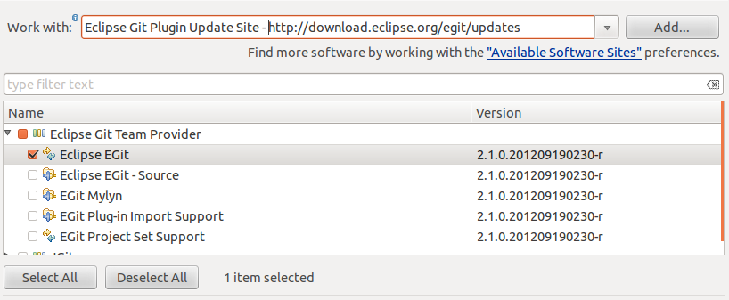

Artistic Style (or astyle for short) is a source code indenter, formatter, and beautifier for the C, C++, C# and Java programming languages. It is a great tool to ensure your code is beatifully and consistently formatted and indented, and can be used to replace any tabs with spaces, ensuring consistent indentation regardless of the editor you use to view the code.
You can apply astyle from command line simply by:
astyle file.cpp
which would format the file with 4 spaces per indent. You can configure the way of formatting either using command line options or you can place the default options into ~/.astylerc file.
It is also possible to run an external tool on a file in the editor window in Eclipse. Select Run > External Tools > External Tools Configurations..., create a new Program configuration, and fill in the boxes as below:
For convenience, the parameters we have used are here:
--indent=spaces=4 --style=allman --indent-labels --indent-preprocessor --indent-col1-comments \
--max-instatement-indent=60 --min-conditional-indent=0 --pad-oper --unpad-paren --pad-paren-in \
--break-closing-brackets --add-brackets --keep-one-line-blocks --keep-one-line-statements \
--convert-tabs --align-pointer=name --align-reference=name --suffix=none --options=none
You should probably remove the newlines and backslashes if you copy-paste the text into the Arguments box. This version requires version 2.02 or newer — to use version 2.01, drop the parameter --align-reference=name. Note that after pasting the above parameters in the Arguments box, you need to append ${container_loc}/${resource_name}, specific for configuring the tool in Eclipse.
Then configure the Refresh
and Build tabs.
Next, select Run > External Tools > Organize Favorites... and add the astyle tool.
Now you can run astyle for the file that is selected in the edit window by clicking this button. Note that you should save the file first as the input is taken from the file, not from the editor window. The content of the editor window is refreshed automatically.
Eclipse has a built-in formatter, but it is not as nice as astyle. Whereas astyle lets you format whitespace in the editor, such as aligning comments, assignments, or variable declarations in the consecutive lines and doesn’t disturb the edits, Eclipse’s formatter really reformats everything and doesn’t allow as much manual override. However, it’s nice if Eclipse’s default formatting is somewhat similar to what astyle will use. You can configure Eclipse by selecting Eclipse Window > Preferences > C/C++ > Code Style > Import and import this mvc_style.xml file. You can apply the formatter by selecting text and hitting CTRL-SHFT-F (or CMD-SHFT-F on Mac).
Git is a distributed version control system. If you are not familiar with git, it is recommended that you read the Getting started and Git basics chapters of the Git book. In this section we will cover:
EGit is a plugin for Eclipse that provides Git integration. To setup EGit go to Help -> Install New Software and select the http://download.eclipse.org/egit/updates site from the Work with drop down box. If you don’t see the site listed, click on Available software sites and enable it if it is already on the list (usually the case) or add it if it is missing.
To enable Git integration for a project, right-click on the project and
After you have shared the project through Git, you will see a decoration next to the project name that tells you the repository name and the current branch. You can now execute Git commands using the Team context menu, most typically Team -> Commit, Team -> Pull, and Team -> Switch To.
NVIDIA git server is ssh://git-master:12001. The fcam repository path is 3rdparty/fcam.git. If you want to connect to the server you must log in to http://git-master and add your ssh public key to the server. Once you log in to the server, go to Settings -> SSH Public Keys. Your public key is stored in your $HOME/.ssh/id_rsa.pub file.
To clone a repository that is on a remote server, you execute the git clone command:
git clone ssh://server:port/path/repo.git
You can do the same with the Eclipse Git plugin:
If you use the SSH protocol, you will need to upload your public SSH key to the server. Typically this is done by logging into http://git-master and going to Settings -> SSH Public Keys. To manage you public keys in Eclipse, go to Window -> Preferences -> Network connection -> SSH2, where you will be able to specify your keys store location and generate new keys if necessary. Once you have a key you can upload id_rsa.pub to the remote server.
When you work on a repository that you have cloned from a server, you will be working on a local copy of a remote branch. This local branch is a remote tracking branch. All commits that you make stay local until you push them to the remote server. The push operation will fail if the head of your local remote tracking branch is out of sync with the remote head:
$ git push origin dev/newdocs
To ssh://username@git-master:29481/path/repo.git
! [rejected] branchname -> branchname (non-fast-forward)
error: failed to push some refs to 'ssh://username@git-master:29481/path/repo.git'
To prevent you from losing history, non-fast-forward updates were rejected
Merge the remote changes (e.g. 'git pull') before pushing again. See the
'Note about fast-forwards' section of 'git push --help' for details.
To bring your tree in sync, you will need to execute a git pull command. To keep a linear history for the branch it is a good idea to adopt a rebase strategy (as opposed to a merge). This means that during pull your local branch will be first updated to the top of the tree and your commits re-applied. This is good because you update your local source tree to the state your team has brought it to:
$ git pull --rebase origin branchname
remote: Counting objects: 21, done.
remote: Compressing objects: 100% (11/11), done.
remote: Total 16 (delta 10), reused 11 (delta 5)
Unpacking objects: 100% (16/16), done.
From git://server/path/repo
* branch branchname -> FETCH_HEAD
First, rewinding head to replay your work on top of it...
Applying: tutorial: Add git section to sweng.rst
If there are any conflicts you will get a chance to fix them before finishing the rebase. After you finish the rebase you can push your changes to the server.
To summarize, the proposed workflow is:
You can configure your local branch to always rebased on a pull operation. Edit the .git/config file and look for your branch. Then add rebase = true:
[branch "branchname"]
remote = origin
merge = refs/heads/branchname
rebase = true
Sometimes you do frequent local commits at several stages of your work that you would like to push to the remote server as a single commit. This is where the git rebase -i FETCH_HEAD command comes very handy to update your local repository history before pushing your changes:
$git rebase -i FETCH_HEAD
pick c4e3c7b tutorial: Added git section to sweng.rst
pick 3ff25ef tutorial: spacing changes to sweng.rst
# Rebase 33afbde..3ff25ef onto 33afbde
#
# Commands:
# p, pick = use commit
# r, In this case, the proposed workflow becomes: reword = use commit, but edit the commit message
# e, edit = use commit, but stop for amending
# s, squash = use commit, but meld into previous commit
# f, fixup = like "squash", but discard this commit's log message
# x, exec = run command (the rest of the line) using shell
#
# If you remove a line here THAT COMMIT WILL BE LOST.
# However, if you remove everything, the rebase will be aborted.
#
git rebase -i FETCH_HEAD will launch an editor with a list of recent commits that you have made since you last synchronized your source tree with the remote server (i.e. your local commits). For each commit, you can choose to pick it, squash it with the previous one, or delete it. To squash the second commit shown above with the previous one, change pick to squash:
pick c4e3c7b tutorial: Added git section to sweng.rst
squash 3ff25ef tutorial: spacing changes to sweng.rst
Then you will be prompted to create a new commit message for the new commit:
# This is a combination of 2 commits.
# The first commit's message is:
tutorial: Added git section to sweng.rst
# This is the 2nd commit message:
tutorial: spacing changes to sweng.rst
Enter the new message and save the file to proceed with the commit. The proposed workflow then becomes:
If for any reason there is a problem with the rebase and you find your self in a state that doesn’t seem correct, run git status and verify if you are in an unattached head state:
# Not currently on any branch.
If this is the case, your rebase is incomplete. To fix this, abort the rebase and do it again:
$git rebase --abort
Do not use git rebase -i to edit any commit that has already been pushed to the server by you or other team member. Only use git rebase -i FETCH_HEAD to see the local commits that are not yet pushed.
See rewriting history for more details.
Git allows you to define a series of hooks to run at different stages of the Git workflow. One such hook is called the pre-commit hook and can be executed when you invoke the git commit command.
Note
The hooks we cover here are shell scripts that are executed locally, and as such, you must ensure they work on all operating systems the project can be developed on. The EGit plugin for Eclipse doesn’t execute the hooks.
We now show a sample pre-commit hook that invokes Astyle on all files to be committed. Copy the code into .git/hooks/pre-commit to enable it.
#!/bin/sh
if git rev-parse --verify HEAD >/dev/null 2>&1
then
against=HEAD
else
# Initial commit: diff against an empty tree object
against=4b825dc642cb6eb9a060e54bf8d69288fbee4904
fi
# If you want to allow non-ascii filenames set this variable to true.
allownonascii=$(git config hooks.allownonascii)
# Cross platform projects tend to avoid non-ascii filenames; prevent
# them from being added to the repository. We exploit the fact that the
# printable range starts at the space character and ends with tilde.
if [ "$allownonascii" != "true" ] &&
# Note that the use of brackets around a tr range is ok here, (it's
# even required, for portability to Solaris 10's /usr/bin/tr), since
# the square bracket bytes happen to fall in the designated range.
test "$(git diff --cached --name-only --diff-filter=A -z $against |
LC_ALL=C tr -d '[ -~]\0')"
then
echo "Error: Attempt to add a non-ascii file name."
echo
echo "This can cause problems if you want to work"
echo "with people on other platforms."
echo
echo "To be portable it is advisable to rename the file ..."
echo
echo "If you know what you are doing you can disable this"
echo "check using:"
echo
echo " git config hooks.allownonascii true"
echo
exit 1
fi
version=`astyle --version 2> /dev/null`
if test "x$version" != "x"; then
echo "SDF3 git pre-receive hook:"
echo "Did not find astyle, please install it before continuing."
exit 1
fi
ASTYLE=astyle
case `$ASTYLE --version 2> /dev/null` in
Artistic*)
;;
default)
echo "SDF3 git pre-commit hook:"
echo "Did not find astyle, please install it before continuing."
exit 1
;;
esac
ASTYLE_PARAMETERS="\
--indent=spaces=4 \
--style=allman \
--indent-labels \
--indent-preprocessor \
--indent-col1-comments \
--max-instatement-indent=60 \
--min-conditional-indent=0 \
--pad-oper \
--unpad-paren \
--pad-paren-in \
--break-closing-brackets \
--add-brackets \
--keep-one-line-blocks \
--keep-one-line-statements \
--convert-tabs \
--align-pointer=name \
--align-reference=name \
--suffix=none \
--options=none "
ASTYLE_PARAMETERS_JAVA="\
--indent=spaces=4 \
--style=java \
--indent-labels \
--indent-preprocessor \
--indent-col1-comments \
--max-instatement-indent=60 \
--min-conditional-indent=0 \
--pad-oper \
--unpad-paren \
--pad-paren-in \
--break-closing-brackets \
--add-brackets \
--keep-one-line-blocks \
--keep-one-line-statements \
--convert-tabs \
--align-pointer=name \
--align-reference=name \
--suffix=none \
--options=none "
echo "--Formatting source code--"
files=`git-diff-index --diff-filter=ACMR --name-only -r --cached $against --`
for file in $files; do
x=`echo $file |grep -E '(\.c$|\.cc$|\.h$|\.cpp$|\.hpp$)'`
if test "x$x" != "x"; then
# Save a temp copy of the origin file
cp $file ${file}.orig
$ASTYLE ${ASTYLE_PARAMETERS} $file
git add $file
# If the saved copy and the new file are the same
# delete the temporary copy
if diff $file ${file}.orig >/dev/null ; then
rm ${file}.orig
fi
fi
x=`echo $file |grep -E '(\.java$)'`
if test "x$x" != "x"; then
# Save a temp copy of the origin file
cp $file ${file}.orig
$ASTYLE ${ASTYLE_PARAMETERS_JAVA} $file
git add $file
# If the saved copy and the new file are the same
# delete the temporary copy
if diff $file ${file}.orig >/dev/null ; then
rm ${file}.orig
fi
git add $file
fi
done
echo "--Formatting source code done--"
Documenting the code is important for many reasons: it clarifies your thinking of what the software really does, reminds you later of the same thing, and allows others to use your code. Writing documents separately from your code is error-prone, and quite often the documentation lags behind and gets stale as the code evolves. The solution is to automate as much of the process as possible, and tie the documentation and the program code together. Doxygen is the right tool for this task.
Let’s try using it: install doxygen, go to /tutorials/SimpleImageOpenCV_GL_Complete/jni, and run:
doxygen -g
to generate a default Doxyfile, with default configuration that you can edit, and:
doxygen
which generates the documentation. Then open html/index.html. Click Classes > Engine, and you’ll see the documentation for the Engine class. This piece of the header file
has turned into this piece of documentation.
The trick is the special syntax of the comment, where the comment starts with /**.
FCam documentation has been created using doxygen. Open fcam4tegra.zip and unzip it; then open modules/fcam/docs/html/index.html to see the documentation.
You can create documentation at many levels. If you open fcam/include/FCam/FCam.h, you see several types of tags. One of them is \mainpage, which produces the main page of FCam documentation. Various types of links are provided, and you can even include bitmap images. Every file can be documented with the \file tag. If you open fcam/include/FCam/Image.h, you see that a comment before the class definition is used to provide an overview of the class, a comment before a method documents the method, and a comment before a member variable documents that. There are keywords that support documenting function arguments and the return values. A detailed manual is provided. Here is an example of documented code, from that manual (you should set JAVADOC_AUTOBRIEF to YES in Doxyfile with this example):
/**
* A test class. A more elaborate class description.
*/
class Test
{
public:
/**
* An enum.
* More detailed enum description.
*/
enum TEnum
{
TVal1, /**< enum value TVal1. */
TVal2, /**< enum value TVal2. */
TVal3 /**< enum value TVal3. */
}
*enumPtr, /**< enum pointer. Details. */
enumVar; /**< enum variable. Details. */
/**
* A constructor.
* A more elaborate description of the constructor.
*/
Test();
/**
* A destructor.
* A more elaborate description of the destructor.
*/
~Test();
/**
* A normal member taking two arguments and returning an integer value.
* @param a an integer argument.
* @param s a constant character pointer.
* @see Test()
* @see ~Test()
* @see testMeToo()
* @see publicVar()
* @return The test results
*/
int testMe( int a, const char *s );
/**
* A pure virtual member.
* @see testMe()
* @param c1 the first argument.
* @param c2 the second argument.
*/
virtual void testMeToo( char c1, char c2 ) = 0;
/**
* A public variable.
* Details.
*/
int publicVar;
/**
* A function variable.
* Details.
*/
int ( *handler )( int a, int b );
};
The output will look like this. Click here for more details.
You can even include LaTeX formulas. Additional information, including quick-start guides, can be found here.
Unit test is one of the most important stages in any devlopment project. Unit test will reduce the number of bugs, the cost of change of the existing code, and even improve the design of the project. Here are good articles that show why writing unit tests is necessary: Top 12 reasons to Write Unit Tests, and Wrong reasons Not to Write Unit Tests
Google’s C++ unit test framework (we will call it as Gtest from now on) provides a variety of testing capabilities for C++ based projects. It supports automatic test discovery, a rich set of assertions, user-defined assertions, death tests, and various options for running the tests. In this tutorial, we show how to use Gtest library in an Android project.
To make use in Android easy for you, we have already built the library, and added the library, header files, and Android.mk in tutorials/UnitTestDriver. You can still download Gtest source code, then build it yourself if needed.
Now let’s start by importing our unit test driver project, tutorials/UnitTestDriver (if you need help, see importing a project into Eclipse).
Then, let’s first look into tutorials/UnitTestDriver/jni/gtest-1.6.0:
[...]
include
libs
[...]
Android.mk
There are other files inside the folder, but the pre-built library for Android, libgtest.a, can be found in gtest-1.6.0/libs/armeabi-v7a/. The paths for the library are defined in gtest-1.6.0/Android.mk as shown below.
LOCAL_PATH := $(call my-dir)
include $(CLEAR_VARS)
LOCAL_MODULE := gtest
LOCAL_EXPORT_C_INCLUDES := $(LOCAL_PATH)/include
LOCAL_SRC_FILES := ./libs/$(TARGET_ARCH_ABI)/libgtest.a
include $(PREBUILT_STATIC_LIBRARY)
Now, let’s check out if we correctly include gtest.h at the beginning of unittestdriver.h:
#include <gtest/gtest.h>
Then, let’s open and look at unittestdriver.cpp. This file is a driver file that loads and initializes Gtest, and runs the testing code. Because Gtest internally prints out the result streams, the driver function handles the output of the testing streams from Gtest, and prints them out on the display in Android app.
The following code shows the UnitTestDriver::run() function that runs unit test.
void UnitTestDriver::run()
{
char * argv[] =
{ ( char * ) "UnitTestDriver" };
int argc = sizeof( argv ) / sizeof( const char * );
logStream() << "*** Starting Unit Test ***" << std::endl << flush();
// Initialize the testing framework
::testing::InitGoogleTest( &argc, argv );
// Add this class as an event listener
::testing::UnitTest::GetInstance()->listeners().Append( this );
// Run all the tests.
mTestResult = RUN_ALL_TESTS();
}
In the code above, we first set the initial argument with the name of the whole test, then added the current driver class as an event listener to the Gtest class. Finally, we run all the tests by calling RUN_ALL_TESTS() function. By calling this function, Gtest will search all types of unit test (TEST(string, string)) that are shown in any source files inside jni directory.
Now we can write actual tests. In jni folder, we have added unittest.cpp. The following code shows some sample unit tests using Gtest.
#include<gtest/gtest.h>
unsigned int Fibonacci( unsigned int n )
{
if ( n == 1 ) return 1;
if ( n == 0 ) return 0;
return Fibonacci( n - 1 ) + Fibonacci( n - 2 );
}
// Tests Fibonacci of 0, 1
TEST(FibonacciTest, HandlesZeroInput)
{
EXPECT_EQ( 0, Fibonacci(0) );
EXPECT_EQ( 1, Fibonacci(1) );
}
// Tests Fibonacci of numbers greater than 1
TEST(FibonacciTest, HandlesGreaterThan1)
{
EXPECT_EQ( 1, Fibonacci(2) );
EXPECT_EQ( 2, Fibonacci(3) );
EXPECT_EQ( 21, Fibonacci(8) );
EXPECT_EQ( 55, Fibonacci(10) );
}
We first define a testing module as a function, Fibonacci (unsigned int n) at the beginning, and call this module inside each testing function TEST(). In each test function, the first argument refers to the module, and the second one refers to each unit test. Many types of assertion and comparison functions are introduced in GTest basic assertion page.
Next, modify jni/Android.mk as shown below.
[...]
# Driver source files
LOCAL_SRC_FILES := unittestdriver.cpp com_nvidia_unittest_UnitTestDriver.cpp
# Add your test files here
LOCAL_SRC_FILES += unittest.cpp
# GTest required library
LOCAL_STATIC_LIBRARIES := gtest
# Add your additional libraries here
LOCAL_STATIC_LIBRARIES +=
[...]
$(call import-add-path, $(LOCAL_PATH))
$(call import-module, gtest-1.6.0)
Now, let’s build and run the project. The following image shows the result.

The results shows that the tests for Fibonacci function was successful.
Now, you can test your own code by locating the source code at /jni folder. However, in practice, we may want to test existing codes from other projects. In next section, we will show how to construct a code organization to modulize the projects, then we will show that we can directly test the existing codes from each module.
Once you have decided that you want to have unit testing for your projects, you might find yourself tempted to just copy all your sources under the jni folder of the UnitTestDriver project and build your tests. Unfortunately, this approach is not good, you don’t want to have multiple copies of your sources, one for testing, and one for deployment.
A good practice is to put the core modules of your work into libraries. Then, both your final application and your unit-test code link against the same library sharing the same source. We will briefly show one possible way of organizing your code for such purpose. We suggest you set up your source tree as follows:
/
work/
modules/
module1/
Android.mk
include/
src/
module2/
Android.mk
include/
src/
module3/
Android.mk
include/
src/
apps/
app1/
src/
jni/
Android.mk
app2/
src/
jni/
Andorid.mk
unit-tests/
tests-module1/
src/
jni/
Android.mk
tests-module2/
src/
jni/
Android.mk
tests-module3/
src/
jni/
Android.mk
In the hierarchy shown above, we have separated the core functionality from the applications and the testing stubs. The Android makefile system allows us to define modules that can be imported from other modules, as we have done several times through this tutorial. In this section we will take a closer look at how to write the Android.mk files.
First, we will take a look at the Android.mk for module1:
LOCAL_PATH := $(call my-dir)
include $(CLEAR_VARS)
#
# LOCAL_ variables with instructions to build module:
#
LOCAL_MODULE := module1
# Add all .c and .cpp files under ./src
MY_PREFIX := $(LOCAL_PATH)
MY_SOURCES := $(wildcard $(LOCAL_PATH)/src/*.cpp)
MY_SOURCES += $(wildcard $(LOCAL_PATH)/src/*.c)
LOCAL_SRC_FILES += $(MY_SOURCES:$(MY_PREFIX)%=%)
# Define include search path.
LOCAL_C_INCLUDES := $(LOCAL_PATH)/include
#
# LOCAL_EXPORT_ variables are appended to the corresponding LOCAL_
# variable of the calling module
#
LOCAL_EXPORT_C_INCLUDES := $(LOCAL_PATH)/include
include $(BUILD_STATIC_LIBRARY)
The above make file looks very much like other makefiles we have written. But notice that in addition to defining sources and include paths it also has a LOCAL_EXPORT_C_INCLUDES. The value of this variable is appended to the corresponding local variable of the calling module, so that the calling module doesn’t need to know where the headers are located, for example.
Another module (e.g. module2) can import this module by referring to module1 under the LOCAL_STATIC_LIBRARIES:
LOCAL_PATH := $(call my-dir)
include $(CLEAR_VARS)
#
# LOCAL_ variables with instructions to build module:
#
LOCAL_MODULE := module2
# Add all .c and .cpp files under ./src
MY_PREFIX := $(LOCAL_PATH)
MY_SOURCES := $(wildcard $(LOCAL_PATH)/src/*.cpp)
MY_SOURCES += $(wildcard $(LOCAL_PATH)/src/*.c)
LOCAL_SRC_FILES += $(MY_SOURCES:$(MY_PREFIX)%=%)
# Define include search path.
LOCAL_C_INCLUDES := $(LOCAL_PATH)/include
LOCAL_STATIC_LIBRARIES := module1
By extension, any module that imports module2 will need to link against module1. We define this under LOCAL_EXPORT_STATIC_LIBRARIES:
#
# LOCAL_EXPORT_ variables are appended to the corresponding LOCAL_
# variable of the calling module
#
LOCAL_EXPORT_C_INCLUDES := $(LOCAL_PATH)/include
LOCAL_EXPORT_STATIC_LIBRARIES := module1
Finally, we have to import module1:
include $(BUILD_STATIC_LIBRARY)
$(call import-module, module1)
It is very important that the $(call import-module, module) statement comes after include $(BUILD_....) to avoid variable conflicts and redefinitions between modules.
The search path for modules is defined by the NDK_MODULE_PATH environment variable. Before you can build a module that has an import you must make sure NDK_MODULE_PATH is set correctly. No spaces are allowed in NDK_MODULE_PATH, use a : as a path separator, and under Windows, use / as the directory separator. For the source hierarchy shown earlier, we would define:
NDK_MODULE_PATH=/work/modules
You can define NDK_MODULE_PATH as an environment variable in your development machine. In addition, you can define it as a build variable in Eclipse, if you would prefer not to pollute your environment. Go to Window > Preferences > C / C++ > Build > Environment and Add a new variable.
Also, you might have noticed that on our modules source trees we don’t have a jni folder. That is correct, and what happens is that $(call import-module, module1) is just telling the system to read $(NDK_MODULE_PATH)/module1/Android.mk. So the module1 in the import call defines a relative path with respect to a path in NDK_MODULE_PATH . The actual module name is defined by the LOCAL_MODULE := module1 inside Android.mk. In our case, both module name and directory name match, but this is not necessary. An Android.mk file could define multiple modules.
Finally, we will take a look at unit-tests/tests-module1/jni/Android.mk; we assume this is a modified version of the UnitTestDriver presented earlier:
LOCAL_PATH := $(call my-dir)
include $(CLEAR_VARS)
LOCAL_MODULE := tests-module1
# Driver source files
LOCAL_SRC_FILES := unittestdriver.cpp com_nvidia_unittest_UnitTestDriver.cpp
# Add your test files here
LOCAL_SRC_FILES += tests-module1.cpp
# GTest required library
LOCAL_STATIC_LIBRARIES := gtest
# Add your additional libraries here
LOCAL_STATIC_LIBRARIES += module1
# If you add shared libraries, don't forget to
# add a System.loadLibrary() call in UnitTestDriver.java
LOCAL_SHARED_LIBRARIES +=
LOCAL_LDLIBS := -landroid
include $(BUILD_SHARED_LIBRARY)
$(call import-add-path, $(LOCAL_PATH))
$(call import-module, gtest-1.6.0)
$(call import-module, module1)
The shared library that is built using imports gtest-1.6.0 and module1. We could even go further and move gtest-1.6.0 out of the UnitTestDriver/jni folder and into a separate 3rdparty-modules folder and have 3rdparty-modules added to our NDK_MODULE_PATH, try it out!
See also
For more details, see android_ndk_r8c/docs/IMPORT_MODULE.html. Also take a look at android_ndk_r8c/docs/PREBUILTS.html, which shows how to create modules out of pre-built libraries. You can import a module that refers to a pre-built library, as we have done with gtest.
In the above sections, we have shown how to perform unit testing, and to construct an organization of modules. Now we show how to test the modulized codes with our Gtest driver projects. First, let’s look at the organization of tutorials/UnitTestDriver_module folder.
/tutorials/UnitTestDriver_module/
/UnitTestDriver/
jni/
Android.mk
/modules/
OpenCVSupport/
include/
src/
Android.mk
OpenCVSupport2/
include/
src/
Android.mk
There are two folders, UnitTestDriver and modules inside the main folder. The project UniTestDriver is the same driver project used in previous sections. In the module folder, there are two modules called OpenCVSupport and OpenCVSupport2, and we assume that these two modules are existing codes. In this tutorial, the main driver project calls each module, which is built as a seperate static library and runs Gtest for the functions in each module. The modules contain several functions using OpenCV, and we will test the modules by calling functions that detect FAST features in the image lena.jpg (which is already used in the OpenCV tutorial) with fixed parameters. If you did not follow the OpenCV tutorial section and did not upload the image onto your Cardhu, please upload it now to /storage/sdcard0/DCIM.
However, each module also includes an external library such as OpenCV, therefore, we have to set the project so that (1) the driver can acceess the functions in each module, (2) the driver can also use libarary functions that are included in the module (OpenCV), and (3) the build settings in Android.mk for each module should avoid loading the same libraries (i.e., OpenCV in this example).
Let’s first import a unit testing driver projects from the folder in tutorials/UnitTestDriver_module/UnitTestDriver (if you need help, see importing a project into Eclipse). After importing the UnitTestDriver, open the Android.mk file in the /jni folder. Then, let’s specify the static libraries for unit testing. See the following example in Android.mk.
LOCAL_PATH := $(call my-dir)
include $(CLEAR_VARS)
LOCAL_MODULE := unittestdriver
# Enable <memory>
LOCAL_CFLAGS += -std=gnu++0x
ifeq (1, $(NDK_DEBUG))
LOCAL_CFLAGS += -DWAIT_FOR_DEBUGGER
endif
# Driver source files
LOCAL_SRC_FILES := unittestdriver.cpp com_nvidia_unittest_UnitTestDriver.cpp
# Add your test files here
LOCAL_SRC_FILES += unittest.cpp opencv_test.cpp
# GTest required library
LOCAL_STATIC_LIBRARIES += gtest
# Add your additional libraries here
LOCAL_STATIC_LIBRARIES += OpenCVSupportLib OpenCVSupportLib2
# If you add shared libraries, don't forget to
# add a System.loadLibrary() call in UnitTestDriver.java
LOCAL_SHARED_LIBRARIES +=
LOCAL_LDLIBS := ./obj/local/armeabi-v7a/libgnustl_static.a -landroid
include $(BUILD_SHARED_LIBRARY)
$(call import-add-path, $(LOCAL_PATH))
$(call import-module, gtest-1.6.0)
# add here
$(call import-module, OpenCVSupport)
$(call import-module, OpenCVSupport2)
In the above example, LOCAL_SRC_FILES specifies a source file where the actual testing codes are located. Here opencv_test.cpp is supposed to call functions in module OpenCVSupport and OpenCVSupport2. The names of the libraries for both modules are then specified in LOCAL_STATAIC_LIBRARIES. At the end of the above code, we have also specified that we import these modules for testing.
Because all sources insisde UnitTestDriver do not recognize the location of modules at this moment, we have to specify the location of them. In Project > Properties > C/C++ Build > Environment, Click Add button, and define NDK_MODULE_PATH with the absolute paths for the module directory.
Now open the opencv_test.cpp which was added to the /jni folder. The following codes are added in the file.
#include<gtest/gtest.h>
#include<OpenCVSupport/OpenCV_native.h>
#include<OpenCVSupport2/OpenCV_native2.h>
TEST(OpenCVTest, FeatureDetection)
{
COpenCVSample pCv;
int i = pCv.FeatureDetecTest();
EXPECT_EQ( 141, i ) <<"number of features for this test1 = " << i;
}
TEST(OpenCVTest, FeatureDetection2)
{
COpenCVSample2 pCv;
int i = pCv.FeatureDetecTest();
EXPECT_EQ( 141, i ) <<"number of features for this test2 = " << i;
}
In the above code, we first include header files for our existing codes (OpenCV_native.h and OpenCV_native2.h) to test. Then two Gtest functions TEST(OpenCVTest, FeatureDetection) and TEST(OpenCVTest2, FeatureDetection2) are calling FeatureDetecTest() functions from both modules (for simplicity, we added the same function to both modules). Now the assertion function EXPECT_EQ(141,i) will print out “success” if the number of detected features in the image is equal to 141.
Now the unit test is ready to test the modules as long as it can access each library for the modules. Let’s look at the settings for both modules now.
The following code shows the settings for Android.mk in the module OpenCVSupport (which is almost identical to OpenCVSupport2).
LOCAL_PATH := $(call my-dir)
include $(CLEAR_VARS)
ifeq ($(OPENCV_MODULES),)
OPENCV_CAMERA_MODULES := on
OPENCV_INSTALL_MODULES := on
OPENCV_LIB_TYPE := STATIC
include $(NVPACK_PATH)/OpenCV-2.4.2-Tegra-sdk/sdk/native/jni/OpenCV-tegra3.mk
OPENCV_LOCAL_STATIC_LIBRARIES := $(LOCAL_STATIC_LIBRARIES)
OPENCV_LOCAL_LD_LIBS := $(LOCAL_LD_LIBS)
endif
LOCAL_MODULE := OpenCVSupportLib
MY_PREFIX := $(LOCAL_PATH)
MY_SOURCES := $(wildcard $(LOCAL_PATH)/src/*.cpp)
MY_SOURCES += $(wildcard $(LOCAL_PATH)/src/*.c)
LOCAL_SRC_FILES += $(MY_SOURCES:$(MY_PREFIX)%=%)
LOCAL_LDLIBS += -lc -lm -llog -landroid -ldl -lGLESv2 -lEGL
LOCAL_C_INCLUDES := $(LOCAL_PATH)/include $(OPENCV_LOCAL_C_INCLUDES)
# for the module test
LOCAL_EXPORT_C_INCLUDES := $(LOCAL_PATH)/include $(OPENCV_LOCAL_C_INCLUDES)
LOCAL_EXPORT_STATIC_LIBRARIES := $(OPENCV_LOCAL_STATIC_LIBRARIES)
LOCAL_EXPORT_CFLAGS += -std=gnu++0x $(OPENCV_LOCAL_CFLAGS)
LOCAL_EXPORT_LDLIBS += $(OPENCV_LOCAL_LD_LIBS) -lc -lm -llog -landroid -ldl -lGLESv2 -lEGL -lz
include $(BUILD_STATIC_LIBRARY)
In the above settings, we first set the OpenCV library at the begining, to avoid the multiple load of same library (in case when a main application loads several modules that are using OpenCV seperately) by adding the condition, ifeq($(OPENCV_MODULES),). If the OpenCV libarary is not yet loaded, we set some flags used for OpenCV.mk, and specify the paths for the location of OpenCV library. Then, we specify the name of this module (LOCAL_MODULE), and also set the paths for sources and header files.
Finally, we have to specify the exporting set up because this module is built as a static library, and will be used in other applications outside this module. We first specify the paths of the headers in this module, then we also need to pass through the OpenCV library (LOCAL_EXPORT_STATIC_LIBRARIES := $(OPENCV_LOCAL_STATIC_LIBRARIES)) and its supporting libraries to the other applications.
Now we are done with the settings for one module. We can also apply the same set up to OpenCVSupportLib2.
Then, let’s build and run the UnitTestDriver application. After running the application, you will see the SUCESS message from both tests.


{kind=link}
{kind=link}
{kind=link}
{kind=link}
{kind=link}
{kind=link}
{kind=link}
{kind=link}